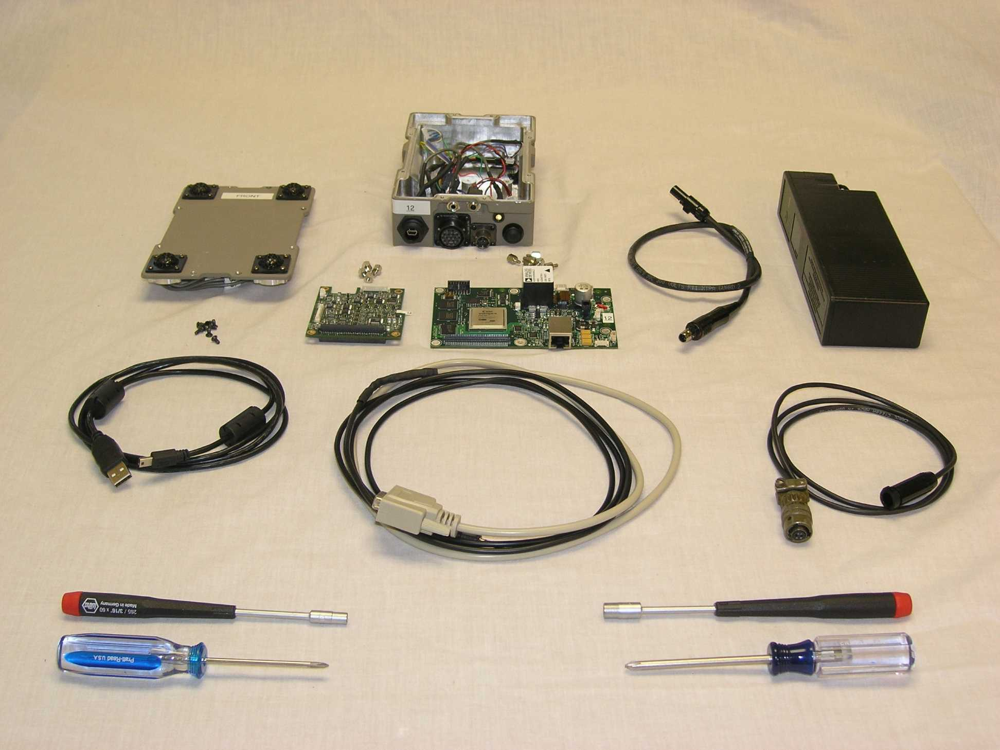

This topic shows the ADF sensor, its cables, necessary tools, and gives directions on how to assemble and power up the box.

The components of the ADF. Listed by number, they are:
Digital Acoustic Direction Finder Main Board (DADF Main Board)
Microphone Daughter Card (MDC)
Etc., etc., etc.
[Note: Add A, B, C labels to image]
abcdefg..
hijklmnop...
qrstuv...
...